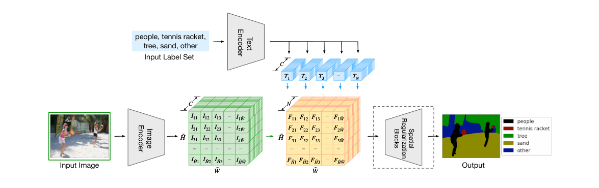
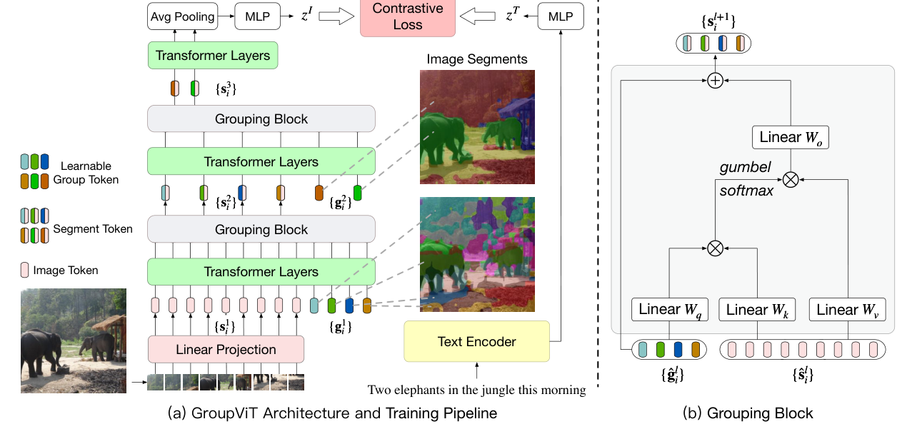
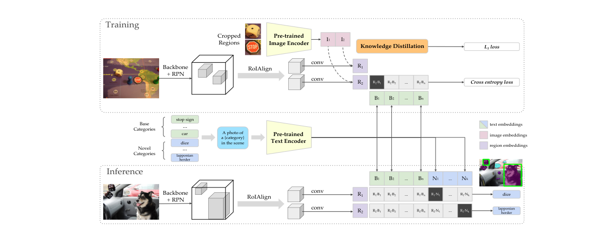
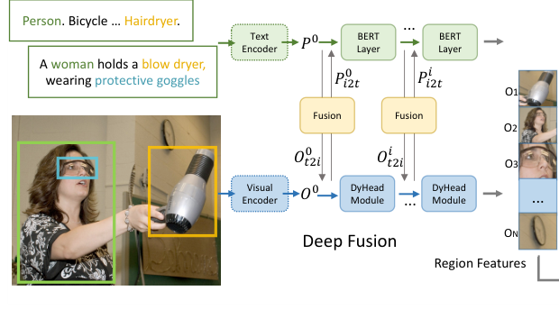

CLIP 改进工作串讲（上）¶
目录¶
- 核心要点
- 1. CLIP 快速回顾
- 2. LSeg：Language-driven Semantic Segmentation
- 3. GroupViT：无监督语义分割
- 4. ViLD：Vision-Language Knowledge Distillation for Open-Vocabulary Detection
- 5. GLIP：Grounded Language-Image Pre-training
- 总结与对比
核心要点¶
- 本期视频串讲了 CLIP 模型在过去一年中被应用到分割和目标检测领域的代表性工作，展示了 CLIP 思想如何从图像分类拓展到密集预测任务。
- 分割领域：LSeg 将 CLIP 预训练参数引入有监督语义分割，实现 language-driven 的 zero-shot 分割；GroupViT 则完全摆脱 mask 标注，用 CLIP 对比学习目标函数 + grouping 机制实现无监督语义分割。
- 目标检测领域：ViLD 通过知识蒸馏将 CLIP 的 open-vocabulary 能力迁移到检测器，在 LVIS 长尾数据集上 zero-shot 性能超越有监督基线；GLIP 统一了目标检测与 phrase grounding 任务，结合大规模伪标签自训练，zero-shot COCO AP 达到 50。
- 这些工作的共同范式是：利用 CLIP 的预训练参数或目标函数，将文本作为监督信号或桥梁，使下游任务获得 open-vocabulary / zero-shot 能力。
- 当前 zero-shot 密集预测与有监督上限仍有显著差距（分割差 30+ mIoU，检测在简单数据集上接近但有监督仍领先），背景类处理、阈值设定、deep fusion 等方向仍有大量研究空间。
1. CLIP 快速回顾¶
1.1 训练方式¶
- CLIP 使用对比学习训练视觉-语言多模态模型。
- 给定一批图像-文本对 \((I_1, T_1), (I_2, T_2), \dots, (I_n, T_n)\)：
- 正样本：对角线上的配对 \((I_i, T_i)\)，文本描述的就是该图片。
- 负样本：非对角线元素，如 \(T_n\) 不描述 \(I_3\)。
- 使用简单的对比学习目标函数，在 4 亿图像-文本对上训练。
- 训练完成后获得强大性能，尤其是 zero-shot 能力。
1.2 推理方式¶
- 对任意图片做分类时：
- 将所有可能的标签做成 template（如 "a photo of a dog"）。
- 所有文本通过文本编码器得到文本特征。
- 计算图像特征与所有文本特征的相似度。
- 取最大相似度对应的文本标签作为预测类别。
- 推理极其灵活，真正实现了 zero-shot。
1.3 CLIP 的广泛应用¶
自 2021 年 2 月发布以来，CLIP 已被应用到众多领域： - 分割：LSeg, GroupViT - 目标检测：ViLD, VLIP v1/v2 - 目标跟踪：对应工作 - 视频：Video CLIP, CLIP4Clip, Action CLIP - 光流/深度：Depth CLIP - 3D：Point CLIP - 语音：Audio CLIP - 图像生成：CLIPasso, VQ-GAN+CLIP, CLIP Draw - 多模态下游任务：大量研究探讨 CLIP 对 Vision-Language 任务的提升
本期视频聚焦于分割和目标检测两个领域。
2. LSeg：Language-driven Semantic Segmentation¶
论文：ICLR 2022, arXiv:2201.03546
2.1 动机¶
- 分割本质上是像素级分类，分类领域的技术往往能直接迁移到分割。
- 分类有了 CLIP，分割自然需要 zero-shot 版本。
- LSeg 直接使用 CLIP 预训练模型做 language-driven 语义分割，方法简单且效果好。
2.2 Zero-Shot 分割效果展示¶
LSeg 展现了极强的灵活性：
- 基础分割：给定文本 "dog" 和 "other"，完美分割出狗，其余为背景。
- 动态增加类别：加入 "tree"，树也被分割出来，狗仍然良好。
- 容错能力：多给一个图中不存在的 "car" 标签，模型不会输出汽车的 mask。
- 层级类别理解：将 "dog" 替换为其父类 "pet"，模型仍能正确分割出狗的区域。
- 室内场景：依次添加 chair → wall → window/floor/ceiling，每次都能精确分割对应区域。
- 这种 language-guided 分割让图像 PS 达到新高度：可以直接用文本指定要抠除/替换的目标。
2.3 模型架构¶
LSeg 的整体框架与 CLIP 高度相似，但有关键区别：

Figure 2: LSeg 模型架构。输入图像经 Image Encoder 提取密集特征（H̃×W̃×C），标签集经 Text Encoder 提取文本特征（N×C），两者点乘得到 H̃×W̃×N 的相关性张量，再通过 Spatial Regularization Blocks 输出分割结果图像分支¶
- 输入图像经过 DPT 结构（ViT + Decoder）提取密集特征。
- DPT = Vision Transformer + decoder（类似 PSP/ASPP 的上采样层）。
- 输出特征图尺寸：\(\tilde{H} \times \tilde{W} \times C\)（如原图的 1/4 或 1/16，C=512 或 768）。
文本分支¶
- 数据集中的 N 个标签通过文本编码器得到 N 个文本特征。
- N 不受限制，推理时可随时更改（只检测狗、或狗+树、或更多）。
- 输出矩阵维度：\(N \times C\)。
特征融合¶
- 图像特征 \((\tilde{H} \times \tilde{W} \times C)\) 与文本特征 \((N \times C)\) 在 C 维度上做点乘。
- 得到 \(\tilde{H} \times \tilde{W} \times N\) 的特征图，与传统有监督分割的输出形式完全一致。
- 最终与 ground truth mask 做 cross-entropy loss。
2.4 关键设计细节¶
训练方式¶
- 有监督训练：在 7 个分割数据集上联合训练，有 ground truth mask。
- 目标函数是 cross-entropy loss，不是对比学习 loss。
- 文本编码器完全锁定，使用 CLIP 原始文本编码器，训练过程中不更新。
- 原因：分割数据集规模小（总共约十几万到二十万张），fine-tune CLIP 文本编码器容易过拟合、破坏预训练特征。
图像编码器初始化¶
- ViT 部分可使用 CLIP 预训练参数，也可使用原始 ViT/DiT 的预训练参数。
- 实验发现使用 ViT/DiT 预训练参数效果更好，CLIP 参数反而不太行（作者未给出解释）。
Spatial Regularization Block¶
- 在文本-视觉特征相乘之后，额外加入一些 conv/depthwise conv 层。
- 目的是让模型进一步学习文本与视觉的交互方式。
- 消融实验显示加 2 个 block 效果最好，加到 4 个性能崩溃（作者未解释原因）。
- 对整体理解和性能影响不大，可忽略。
2.5 实验结果¶
评价设置¶
- 遵循 few-shot 分割的评价协议：
- Pascal-5i：Pascal VOC 20 类分成 4 份，每份 5 类作为已知类，其余 15 类作为未知类。
- COCO-20i：COCO 80 类分成 4 份，每份 20 类已知，60 类未知。
- FSS-1000：1000 类的分割数据集。
主要结果¶
- Pascal 上：比之前 zero-shot 方法提升 10-20 个点，但与 one-shot 方法仍有较大差距。
- COCO-20 上：同样优于之前 zero-shot，但与 one-shot 差距明显。
- 即使使用了 ViT-Large（远大于 ResNet-101），zero-shot 分割与有监督分割之间仍有几十个点的差距。
Failure Case 分析¶
- 给定 "grass" 和 "toy"，草地上的狗被误判为 toy（因为小狗外观与玩具相似）。
- 本质问题：模型计算的是图像-文本相似性，而非真正的分类，谁最接近就选谁。
- 有趣的发现：
- 将 "toy" 换成 "face"，狗也会被分给 face。
- "other" 可以用无意义词（呃、安、and、but、i、me、you）替代，都能充当背景类提示词。
2.6 小结¶
- LSeg 是第一个将 CLIP 用于 zero-shot 语义分割的工作。
- 核心贡献：将文本分支融入传统有监督分割 pipeline，学到 language-aware 的视觉特征。
- 局限：仍依赖手工标注 mask，训练数据规模有限，zero-shot 性能距有监督上限很远。
3. GroupViT：无监督语义分割¶
论文：CVPR 2022, arXiv:2202.11094
3.1 动机¶
- LSeg 虽然用了 CLIP 预训练参数，但目标函数不是对比学习，仍依赖手工标注的 segmentation mask。
- 分割 mask 标注极其昂贵，7 个数据集加起来也只有十几万到二十万张图片。
- 核心问题：如何摆脱手工标注，真正用文本作为监督信号，实现无监督分割？
- GroupViT 是这个方向上有贡献的工作：不依赖 mask 标注，像 CLIP 一样利用图像-文本对进行无监督训练。
3.2 核心思想：Grouping¶
- 借鉴传统无监督分割中的 grouping 方法：从聚类中心出发，将周围相似的像素逐步扩充成一个 group，每个 group 相当于一个 segmentation mask。
- 这是一种自下而上的方式。
- GroupViT 重新审视 grouping 方法，将其融入 ViT 框架。
3.3 模型架构¶

Figure 2: GroupViT 架构与训练流程。(a) 整体架构和训练 Pipeline：输入图像经 Linear Projection 得到 image token，通过多阶段 Transformer Layers + Grouping Blocks 进行层级式分组，最终通过 MLP 和 AvgPool 得到图像特征 z^I，与文本特征 z^T 做对比学习；(b) Grouping Block 内部结构：用 Linear Wq/Wk/Wv 和 Gumbel-Softmax 实现 image token 到 group token 的可导分配整体结构¶
- 基于 ViT-Small，共 12 层 Transformer Layer。
- 输入包含两部分：
- Patch Embedding：224×224 图像，patch size 16×16 → 14×14 = 196 个 token，维度 196×384。
- Group Tokens：可学习的 token，初始设为 64×384（64 个聚类中心）。
Group Token 的作用¶
- 类似于 CLS token，但不是 1 个而是 64 个。
- 原因：CLS token 代表整张图片，而分割需要每个类别/区域都有特征表示。
- 64 个 group token = 64 个起始聚类中心，通过 self-attention 学习哪些 patch 属于哪个 token。
Grouping Block（第一阶段）¶
- 在第 6 层 Transformer Layer 之后插入第一个 grouping block。
- 功能：将 196 个 image patch embedding 分配到 64 个 group token 上（聚类分配）。
- 实现方式：
- 用类似 self-attention 的方式计算相似度矩阵。
- 用相似度矩阵将 image token assign 到 group token。
- 使用 Gumbel-Softmax 使不可导的分配过程变为可导，支持端到端训练。
- 输出：64×384 的 segment token（序列长度从 196+64 降为 64）。
- 附带好处：降低了序列长度，减少计算复杂度和训练时间（类似 Swin Transformer 的层级式结构）。
Grouping Block（第二阶段）¶
- 在第 9 层 Transformer Layer 之后插入第二个 grouping block。
- 新增 8 个 group tokens（8×384）。
- 将 64 个 segment token 再次映射到 8 个聚类中心。
- 最终输出：8×384 的 group embedding，即图像被分成 8 大块。
3.4 训练方式¶
- 与 CLIP 完全一致：使用图像-文本对的对比学习 loss。
- 图像端得到 8 个 group embedding 后，做 average pooling 融合为一个 384 维特征，再通过 MLP 得到 image-level 特征 \(z^I\)。
- 文本端通过文本编码器得到文本特征 \(z^T\)。
- 计算 \(z^I\) 与 \(z^T\) 的对比学习 loss。
- 不使用任何 segmentation mask 标注。
- 实验中最大数据集为 29M（2900 万图像-文本对），远小于 CLIP 的 4 亿。
3.5 Zero-Shot 推理¶
- 图片经过 GroupViT 得到 8 个 group embedding。
- 候选标签通过文本编码器得到文本特征。
- 计算每个 group embedding 与所有文本特征的相似度。
- 相似度最高的文本标签即为该 group 的类别。
局限性：最多只能检测到 8 类（因为只有 8 个 output token）。作者尝试了多种配置（16→64, 40→16 等），发现 8 个 output token 效果最好。
3.6 可视化验证¶
- Stage 1（64 tokens）：关注较小区域。
- Group 5 → 眼睛（人眼、狗眼等各种眼睛）。
- Group 36 → 四肢。
- Stage 2（8 tokens）：关注更大区域。
- Group 6 → 草地。
- Group 7 → 人脸。
- 验证了 group token 确实起到了聚类中心的作用，grouping 思想有效。
3.7 实验结果¶
| 数据集 | GroupViT mIoU | 有监督上限 mIoU | 差距 |
|---|---|---|---|
| Pascal VOC | 52.3 | ~87-88 (DeepLab V3+) | ~35 点 |
| Pascal Context | 22.4 | ~55-60 | ~33 点 |
- 相比之前的 baseline 有很大提升，是用文本做监督信号的第一个无监督分割工作。
- 但与有监督上限差距仍然非常大。
3.8 局限性与未来方向¶
局限性 1：缺少 Dense Prediction 特性¶
- GroupViT 更偏向图像编码器，未利用分割领域成熟的技术：
- Dilated Convolution
- Pyramid Pooling
- U-Net 结构
- 这些技术能提供更多上下文和多尺度信息，每一个都可能成为未来改进方向。
局限性 2：背景类问题¶
- Zero-shot 推理时设置了相似度阈值（如 Pascal VOC 上为 0.9/0.95）：
- 最高相似度超过阈值 → 归为对应前景类。
- 所有相似度都低于阈值 → 归为背景类。
- Pascal VOC 上类别少、语义明确，阈值法尚可。
- Pascal Context / COCO 上类别多，置信度普遍较低：
- 阈值设高 → 大多数变成背景，前景 mIoU 很低。
- 阈值设低 → 错误分类严重。
上限实验验证¶
- 将 GroupViT 输出的 prediction mask 与所有 ground truth mask 比较，取 IoU 最大的 GT label 赋给 prediction。
- 结果：mIoU 一下增加了 20-30 个点，接近有监督上限。
- 结论：GroupViT 的分割（mask 生成）做得很好，只是分类错了。问题出在 CLIP 训练方式无法学到模糊的背景类概念。
可能的改进方向¶
- 按类别设置不同阈值 / 可学习阈值。
- 修改 zero-shot 推理流程。
- 训练时加入背景类约束。
- 引入 dense prediction 技术（dilated conv, pyramid pooling, U-Net）。
3.9 分割部分总结¶
| 工作 | 是否用 CLIP 预训练参数 | 训练方式 | 目标函数 | 核心贡献 |
|---|---|---|---|---|
| LSeg | 是（文本编码器锁定） | 有监督（7 个分割数据集） | Cross-Entropy | 将文本分支融入分割 pipeline，实现 language-driven 分割 |
| GroupViT | 否（从头训练） | 无监督（图像-文本对） | CLIP 对比学习 Loss | 用 grouping 机制 + CLIP 目标函数实现无监督分割 |
4. ViLD：Vision-Language Knowledge Distillation for Open-Vocabulary Detection¶
论文：ICLR 2022, arXiv:2104.13921 从 CLIP 发布（2021.2.26）到论文上传 arXiv（2021.4.28）仅两个月。
4.1 动机¶
- 现有目标检测数据集标注类别有限（base category），无法检测新类别（novel category）。
- 例如：数据集只标注了 "toy"，但无法区分 "rubber duck" 或 "green crocodile toy"。
- 目标：在不额外标注新类别的前提下，让检测器具备检测 novel category 的能力（open-vocabulary detection）。
4.2 论文写作亮点¶
- 引言开头一张图 + 一个问题，清晰引出研究动机。
- 紧接着直接说明本文要做什么。
- 审稿人和读者都能快速理解论文价值，无需通读全文才知道相关性。
4.3 方法总览¶
ViLD 包含三个组件： 1. Baseline：Mask R-CNN（有监督基线） 2. ViLD-text：将文本特征引入检测框架 3. ViLD-image：用 CLIP 图像编码器蒸馏检测器 4. ViLD = ViLD-text + ViLD-image
所有方法都从第二阶段（拿到 N 个 region proposal 之后）开始，定位与分类有所解耦。

Figure 2: ViLD 整体架构概览。训练阶段（上）：Backbone+RPN 提取 region proposal，通过 RoIAlign 得到 region embedding，同时用 CLIP 图像编码器做知识蒸馏（L1 loss）；推理阶段（下）：region embedding 与所有候选类别（base+novel）的文本 embedding 点乘，取最高相似度作为分类结果4.4 Baseline：Mask R-CNN¶
- 两阶段检测器：
- RPN 生成 N 个 region proposal。
- Detection head 得到 N 个 region embedding，再通过分类头得到类别。
- 目标函数分为定位 loss 和分类 loss。
4.5 ViLD-text¶
核心思路¶
- 像 CLIP 一样，将图像特征与文本特征做点乘算相似度，作为分类 logits。
具体做法¶
- N 个 proposal 进检测头 → N 个 region embedding \(e_r\)。
- 物体类别（base category）加上 prompt → 文本编码器 → \(C_B\) 个 text embedding \(t_1, t_2, \dots, t_{C_B}\)。
- Region embedding 分别与 background embedding 和所有 text embedding 做点乘 → 分类 logits。
- Softmax + Cross-Entropy Loss 训练。
关键点¶
- 文本编码器锁定（蓝色标注），不参与训练（同 LSeg）。
- 训练仍在 base category 上有监督进行。
- Background embedding 专门学习，不在基础类里的所有物体都归为背景。
- ViLD-text 只是建立了图像-文本特征的关联，zero-shot 性能尚待加强。
4.6 ViLD-image¶
核心思路¶
- CLIP 预训练的图像编码器非常好，希望检测器的 region embedding 尽可能接近 CLIP 的图像 embedding。
- 使用知识蒸馏实现。
具体做法¶
- 将 proposal crop & resize 后送入锁定的 CLIP 图像编码器（teacher）→ CLIP image embedding。
- 检测器（student）输出的 region embedding 与 CLIP embedding 做 L1 loss 蒸馏。
- 监督信号来自 CLIP 而非人工标注 → 不再受 base category 限制，novel category 的 proposal 也可参与训练。
预计算优化¶
- CLIP ViT-Large 前向传播很贵，若每次训练 iteration 都对所有 proposal 过 CLIP，训练时间不可接受。
- 解决方案：预计算。
- 训练前用 RPN 预抽取 M 个 proposal。
- 提前 crop & resize 并通过 CLIP 提取 embedding，存到硬盘/内存。
- 训练时直接 load 预计算的 embedding，蒸馏 loss 计算非常快。
- 注意：预计算的 M 个 proposal 与训练时动态生成的 N 个 proposal 不同。
4.7 ViLD = ViLD-text + ViLD-image¶
- 两个目标函数的组合，整体框架不变。
- 训练时：
- N 个动态 proposal + M 个预计算 proposal 一起送入检测头 → N+M 个 embedding。
- 前 N 个算 cross-entropy loss（ViLD-text）。
- 后 M 个算 L1 蒸馏 loss（ViLD-image）。
- 推理时：CLIP 图像编码器分支完全不使用，只用检测器 + 文本编码器。
4.8 Zero-Shot 推理¶
- 图片 → Backbone + RPN → region proposal → region embedding（已被 CLIP 蒸馏增强）。
- 所有候选类别（base + novel）→ template → 文本编码器 → text embedding。
- Region embedding 与 text embedding 点乘 → 取最高相似度对应的类别。
4.9 实验结果¶
LVIS 数据集¶
- 1203 类，极度长尾，使用 COCO 图片。
- 类别分为 Frequent / Common / Rare。
- Base category = Common + Frequent = 866 类。
- Novel category = Rare = 337 类。
- 核心指标：\(AP_r\)（rare class 上的 AP）。
| 方法 | \(AP_r\) |
|---|---|
| Supervised (Res50 + RFS) | 12.3 |
| ViLD-text | 接近 12.3 |
| ViLD-image | 接近 12.3 |
| ViLD | 16.1 |
- ViLD zero-shot 比有监督基线高 3.8 个点。
- 原因：LVIS 尾部类别标注极少（有的只有 1-3 个标注），有监督训练反而可能越训越差，zero-shot 更有优势。
- 总体 AP 上 ViLD 与有监督仍有差距。
跨数据集泛化¶
- LVIS 上训练的模型直接迁移到 Pascal VOC、COCO、Object365。
- 在小规模数据集（VOC、COCO）上已接近有监督方法。
- Open-vocabulary 能力良好。
4.10 小结¶
- ViLD 是第一个在 LVIS 这么难的数据集上做 open-vocabulary detection 的工作，里程碑式贡献。
- 利用了 CLIP 的思想（文本-图像对齐）和预训练参数（蒸馏）。
- 实验非常全面，更换 backbone、预训练方式、数据集都能直接用且性能大幅提升。
5. GLIP：Grounded Language-Image Pre-training¶
论文：arXiv:2112.03857
5.1 动机¶
- 与分割类似，精心标注的检测数据难得，现实中边边角角的类和层出不穷的新类无法穷举。
- 需要 open-vocabulary detection 模型处理 corner case。
- 要训练强大的 open-vocabulary 检测模型，需要像 CLIP 一样有大规模预训练数据集（千万到亿级）。
- 关键洞察：Vision Grounding 任务（给定句子，定位句中提到的物体）与目标检测本质相同，只是标签形式不同（句子 vs. 单词）。可以将两个任务统一，从而利用更多数据。
5.2 任务统一¶
目标检测的分类 Loss¶
- Image backbone → region embedding \(O\)（\(N \times D\)）。
- 分类头 \(W\)（\(C \times D\)）→ logits = \(O \cdot W^T\)。
- NMS 筛选后与 ground truth 算 cross-entropy loss。
Vision Grounding 的分类 Loss¶
- Image backbone → region feature \(O\)。
- 文本编码器 → text embedding \(P\)。
- 计算 region-word alignment score \(S = O \cdot P^T\)（与 ViLD-text 一模一样）。
统一方式¶
- 两种方式的唯一区别在于 positive/negative match 的定义。
- 理论推导后，作者验证统一框架在 COCO 上与原始检测模型分数完全匹配。
- 确认统一可行后，就可以合并 detection 和 grounding 的数据集进行联合预训练。
5.3 数据集策略¶
有监督数据¶
- Object365：高质量检测数据集，预训练后微调效果极好。
- GoldG：多个 grounding 数据集的合体（Visual Genome, VQA 等），有 bounding box annotation。
- OpenImages, LVIS 等。
无监督数据（伪标签）¶
- Caps4M / Caps24M：大规模图像-文本对（无 bounding box 标注）。
- 使用 self-training（伪标签）：
- 用已训练好的 GLIP-Tiny-C 在无标注图像-文本对上推理。
- 推理出的 bounding box 当作 ground truth（伪标签）。
- 虽然有噪声，但伪标签近年来被证明能有效提升模型性能和稳健性。
GLIP-Large 配置¶
- Backbone：Swin-Large。
- 有监督：OpenImages + Object365 + LVIS + GoldG（能用全用）。
- 无监督：Caps24M（2400 万图像-文本对 + 伪标签）。
5.4 模型架构¶
- 与 CLIP 相似的双分支结构：
- 图像 → 图像编码器 → region embedding。
- 文本 → 文本编码器 → text embedding。

Figure 2: GLIP 统一检测与 grounding 框架。文本 Prompt 经 Text Encoder 和 BERT Layer 提取文本特征，图像经 Visual Encoder 和 DyHead Module 提取区域特征，两者通过 Deep Fusion（多层 Cross-Attention）交互后输出 Region Features，用于计算 region-word alignment score- Deep Fusion：
- 在计算相似度矩阵之前，用 Cross-Attention 让文本和图像特征交互。
- 目的：让 joint embedding space 学得更好，相似概念拉近、不相似概念推远。
- 类似于 LSeg 中 spatial regularization block 的思想，但更系统化。
- 也可应用于分割（如 GroupViT 目前只有最后的 contrastive learning，缺少 early fusion）。
- 目标函数：
- Alignment Loss：region embedding 与 text embedding 的相似度与 ground truth 对齐（本质就是 ViLD-text 的分支）。
- Localization Loss：L1 loss（因为有 ground truth bounding box）。
5.5 Zero-Shot 推理¶
- 与 ViLD 类似：
- 图片 → 检测器 → region embedding。
- 候选类别（或自然语言句子）→ 文本编码器 → text embedding。
- 点乘相似度 → 最高分对应类别/短语。
- 支持两种模式：
- 目标检测模式：给定标签列表，检测所有匹配的物体。
- Phrase Grounding 模式：给定自然语言句子，定位句中提到的物体/概念。
5.6 定性结果¶
- 针管 + 疫苗瓶：没有任何数据集标注过这些类别，GLIP 通过文本理解成功定位。
- 古巴海滩场景：给定描述性句子（"beautiful Caribbean sea green color", "view from above"），GLIP 能定位抽象概念（海绿色、俯视视角、海滩）。
5.7 定量结果¶
COCO Zero-Shot¶
| 方法 | Zero-Shot AP | Fine-Tune AP |
|---|---|---|
| Faster R-CNN / DyHead / Soft Teacher | 不支持 | 很高 |
| GLIP-Large (最大数据) | ~50 | ~60-61 |
- Zero-shot 50 AP 已超过 2019 年前大部分有监督检测器。
- Fine-tune 后在 Swin-Large 下达到 60-61 AP。
- 注意：预训练数据集和 trick 不完全相同，不是严格公平比较。
5.8 GLIP-V2 拓展¶
arXiv:2206.05836
- 将更多任务和数据统一到同一框架：
- Localization 任务：目标检测 + Instance Segmentation。
- Vision-Language Understanding 任务：VL Grounding + VQA + Image Captioning。
- 框架与 GLIP 基本一致，文本端更丰富。
- 代表了统一多任务多模态预训练的趋势（类似 OFA, Unified-IO）。
总结与对比¶
各方法关系图谱¶
CLIP (对比学习, 图像-文本对, zero-shot 分类)
├── 分割
│ ├── LSeg: CLIP 预训练参数 + 有监督分割 + 文本分支 → language-driven zero-shot 分割
│ └── GroupViT: CLIP 目标函数 + grouping 机制 + 无监督 → 纯文本监督的 zero-shot 分割
└── 目标检测
├── ViLD: CLIP 蒸馏 + 文本分支 → open-vocabulary zero-shot 检测
└── GLIP: 统一 detection + grounding + 伪标签自训练 → 大规模预训练的 zero-shot 检测
└── GLIP-V2: 进一步统一分割、VQA、Captioning 等任务
核心范式总结¶
- 利用 CLIP 预训练参数：LSeg（文本编码器锁定）、ViLD（图像编码器蒸馏）。
- 利用 CLIP 目标函数：GroupViT（对比学习 loss 做无监督分割）。
- 文本作为桥梁：所有工作都通过文本将视觉特征与语言语义对齐，获得 open-vocabulary 能力。
- 从简单适配到深度融合：
- 早期（LSeg, ViLD）：简单拼接文本分支或蒸馏。
- 后期（GLIP）：deep fusion、任务统一、大规模伪标签自训练。
当前挑战与未来方向¶
| 挑战 | 说明 |
|---|---|
| Zero-shot 与有监督差距大 | 分割差 30+ mIoU，检测在简单数据集接近但复杂数据集仍有差距 |
| 背景类处理 | CLIP 训练方式难以学到模糊的背景概念，阈值设定困难 |
| 缺乏 dense prediction 设计 | GroupViT 未用 dilated conv / pyramid pooling / U-Net |
| 数据规模 | 分割/检测的预训练数据远小于 CLIP 的 4 亿，扩大数据有望提升 |
| Early Fusion | 目前多为 late fusion，deep fusion / cross-attention 可能是更好的方向 |
| 统一框架 | GLIP-V2、OFA、Unified-IO 等趋势表明多任务统一预训练是未来方向 |